译自官方论坛活动帖：Halloween 2026 Prevalian Merchant Items（作者 Expo）
说明：本译文尽量保留原文结构与商品名；专有名词首次出现标注英文（如 普雷瓦利亚商人 Prevalian Merchant），便于对照。所有配图均为官方原图。
活动总览
普雷瓦利亚商人 Prevalian Merchant 带着全新一袋奇物与糖果回来了……从诡异的穿着装备到阴森的家居装饰，今年的商品合集满满都是万圣节限定好货。在 2025 年的商品迎来终点之前，别忘了先逛逛它们的 「最后机会 LAST CHANCE」 专区。
这些商品将于 2026 年 10 月 16 日至 11 月 1 日期间出售。
万圣节 2026 限定色 · 微光秋色 Shimmer Autumnal
微光秋色合集（色号 Hue 1700）——限定版色调，玩家可以为多种物品购买此配色，并且永远不会返场。
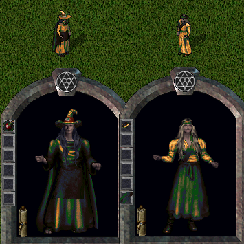
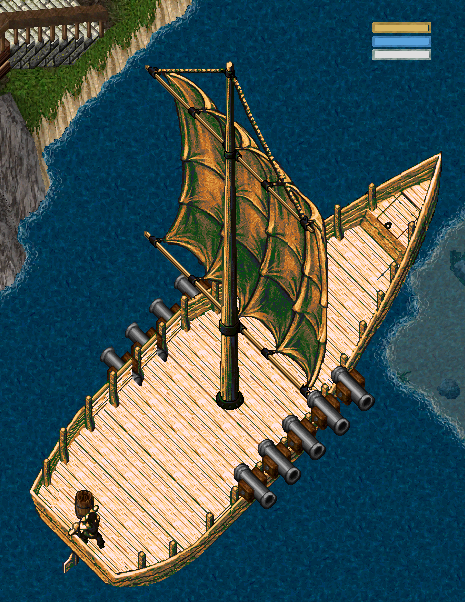
微光秋色（Hue 1700）可染色范围：
- 布料 Cloth
- 背包染料 Backpack Dye
- 发型染料 Hair Dye
- 胡须染料 Facial Hair Dye
- 家具染料 Furniture Dye
- 头饰染料 Headwear Dye
- 提灯 Lantern
- 符文书染料 Runebook Dye
- 配饰染料 Accessory Dye
- 地毯染料 Carpet Dye
- 纹身染料 Tattoo Dye
- 醇草叶 Melloweed Leaves
- 饮具补充装 Drinking Vessel Refill
- 坐骑装备染料 Mount Gear Dye
- 精通链染料 Mastery Chain Dye
- 法术配色合集 Spell Hue Collection
- 船漆 Ship Paint
万圣节 2026 应季穿着 Halloween 2026 Seasonal Wearables
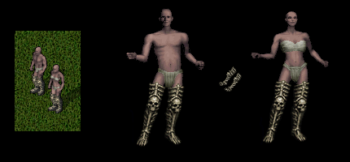
骨制长靴（鞋） Bone Thigh Boots (Shoes)
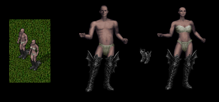
蝠翼长靴（鞋） Batwing Thigh Boots (Shoes)
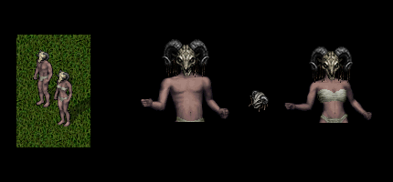
公羊头面具（护甲头盔） Ramshead Mask (Armor Helm)
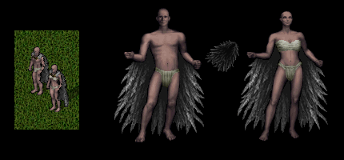
鸦羽斗篷（披风） Ravenfeather Cloak (Cloak)
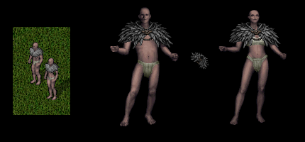
鸦羽披肩（肩部） Ravenfeather Mantle (Shoulder)
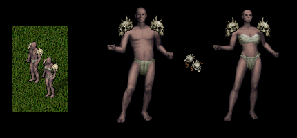
双骷髅肩甲（肩部） Dual Skull Pauldrons (Shoulder)
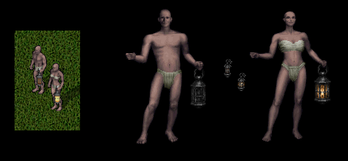
挖墓人提灯（双手副手） Gravediggers Lantern (TwoHanded Secondary)
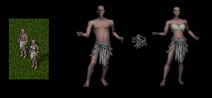
绷带腰布（腰部） Bandage Loin Cloth (Waist)
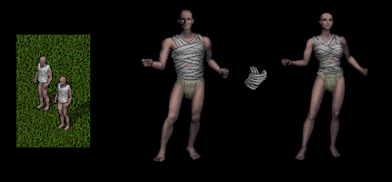
绷带紧身上衣（中躯干） Bandage Doublet (Middle Torso)
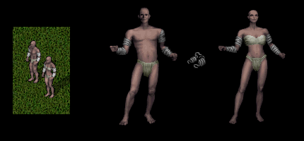
绷带臂缠（外臂） Bandage Arm Wraps (Outer Arms)
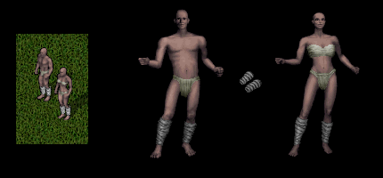
绷带腿缠（腿下） Bandage Leg Wraps (Underlegs)
万圣节 2026 应季装饰 Halloween 2026 Seasonal Decorations
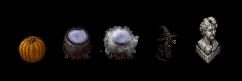
- 南瓜幽灵 Pumpkin Ghost（动画，憨态可掬）
- 冒烟坩埚 Smoking Cauldron（可旋转出多种样式）
- 巫女猫咪 Witchy Kitty
- 破损歌剧胸像 Cracked Opera Bust
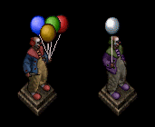
- 气球小丑束 Balloon Cluster Clown
- 气球小丑 Balloon Clown（随机色调）
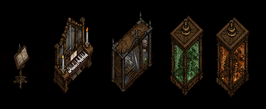
- 歌剧谱架 Opera Stand
- 吸血鬼钢琴 Vampire Piano（动画，双击可播放音乐）
- 怪物猎人橱柜 Monster Hunter Cabinet
- 生物保存罐 Creature Preservation Tank（动画）
- 鲜艳生物保存罐 Vibrant Creature Preservation Tank（动画，随机色调）
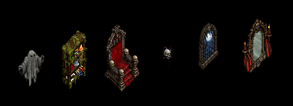
- 幽灵显形 Ghostly Apparition（动画，半透明）
- 黏液储物架改款 Slimey Storage Shelf Restyle
- 流血王座 Bleeding Throne（动画）
- 邪恶头骨 Wicked Skull（动画，随机色调，光源）
- 嚎月之窗 Howling Moon Window（动画）
- 幻影镜 Phantom Mirror（动画，随机色调与光源）
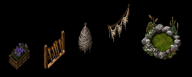
- 狼毒乌头花盆 Wolfbane Planter
- 村民火把架 Villagers Torch Rack
- 蛛茧 Spider Cocoon
- 蛛网花环 Spiderweb Garland
- 冒泡泥沼 Bubbling Bog（动画）
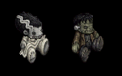
- 弗兰克新娘玩偶 Bride of Frank Plushie
- 弗兰克玩偶 Frank Plushie
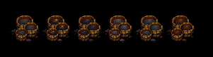
- 微光悖论珍奇染料 Shimmer Paradox Curio Dye
- 微光精灵珍奇染料 Shimmer Spirit Curio Dye
- 微光辛劳珍奇染料 Shimmer Toil Curio Dye
- 微光血污珍奇染料 Shimmer Gore Curio Dye
- 微光枯萎珍奇染料 Shimmer Blight Curio Dye
- 微光脏腑珍奇染料 Shimmer Viscera Curio Dye
最后机会 · 万圣节 2025 应季穿着 LAST CHANCE Halloween 2025 Seasonal Wearables
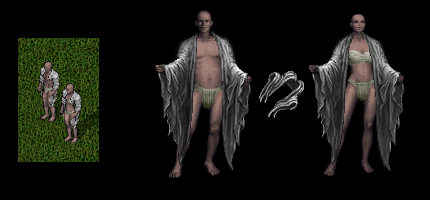
破旧臂巾（外身） Tattered Arm Scarf (Outer Body)
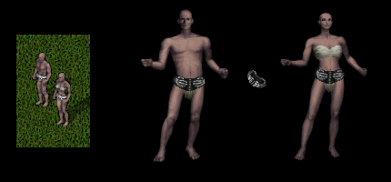
死亡之握腰带（腰部） Deathgrip Belt (Waist)
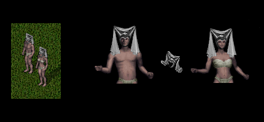
面纱式头巾（护甲头盔） Veiled Escoffion (Armor Helm)
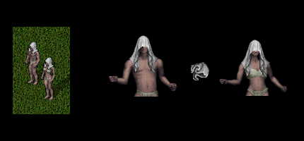
裹身面纱（护甲头盔） Shrouded Veil (Armor Helm)
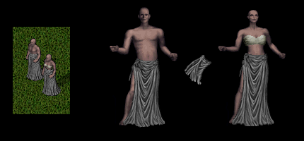
破旧长裙（外腿） Tattered Long Skirt (Outer Legs)
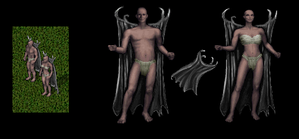
恶魔之翼斗篷（披风） Demonwing Cape (Cloak)
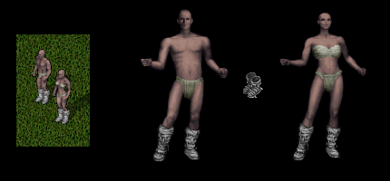
食尸鬼裹足靴（鞋） Ghoul Wrapped Boots (Shoes)
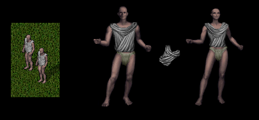
垂褶紧身上衣（中躯干） Draped Doublet (Middle Torso)
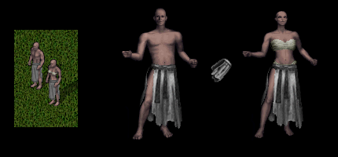
破裂短裙（外腿） Torn Skirt (Outer Legs)
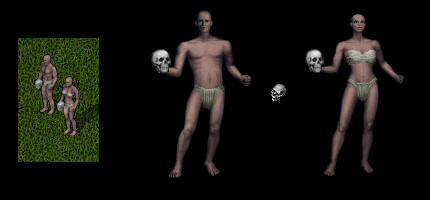
手持头骨（单手） Handheld Skull (One Handed)
最后机会 · 万圣节 2025 应季装饰 LAST CHANCE Halloween 2025 Seasonal Decorations
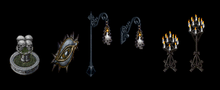
- 腐臭头骨喷泉 Putrid Skull Fountain（动画水源）
- 眨眼金属之眼 Blinking Metal Eye（动画，随机稀有色调）
- 高挂头骨烛台 Tall Hanging Skull Candle（动画，光源）
- 壁挂头骨烛台 Wall Mounted Skull Candle（动画，光源）
- 祭坛烛台 Altar Candelabrum（动画，光源）
- 行进烛台 Processional Candelabrum（动画，光源）
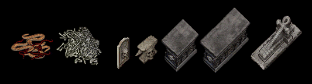
- 蛇巢 Nest of Snakes（动画，随机稀有色调）
- 堆积骸骨 Massed Bones
- 头骨墓碑 Skull Tombstone
- 头骨铁砧 Skull Anvil（可用于锻造 Blacksmithing）
- 小型抛光花岗岩祭坛 Small Polished Granite Altar
- 大型抛光花岗岩祭坛 Large Polished Granite Altar
- 安卡石棺 Ankh Sarcophagus
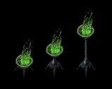
- 矮神秘火盆 Low Mystic Brazier（动画光源）
- 座式神秘火盆 Pedestal Mystic Brazier（动画光源）
- 立式神秘火盆 Standing Mystic Brazier（动画光源）
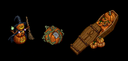
- 女巫杰克南瓜灯 Witchy Jack-O-Mantern（动画）
- 南瓜椅 Pumpkin Chair
- 南瓜满载棺材 Pumpkin Laden Coffin